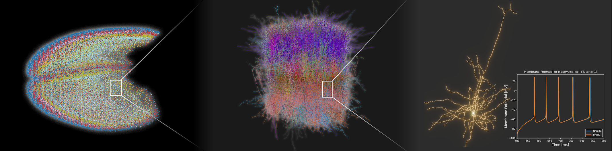

Neulite プロジェクトドキュメンテーション
プロジェクトの概要
Neuliteプロジェクトは、スーパーコンピュータ「富岳」で大規模な生物物理学的ニューロンシミュレーションを実行するために開発されたシステムです。900万個のニューロンと2600億個のシナプス を含むマウス全皮質モデルのシミュレーションを実現しています（詳細は Publication を参照してください）。
{kind=link}

このドキュメントでは、生物物理学的ニューロンモデルのための高性能シミュレーション環境である Neulite と、そのフロントエンドである bionetlite について説明します。
注意
このドキュメントは継続的に更新されています。今後もセクションの追加や内容の充実を予定しています。
BMTKとNeuliteの関係
Neuliteは、Brain Modeling Toolkit (BMTK) で記述されたモデルを 少量の書き換えで動作可能 にします。既存のBMTKモデルを活用しながら、高性能な計算環境での実行を実現します。
主な特徴
🚀 既存コードの再利用: BMTKで書かれたコードのimport文を変更するだけで利用可能
📊 データ標準化: SONATA や Allen Cell Types Database などの標準形式を自動サポート
🔧 軽量設計: UNIX哲学に基づくシンプルで理解しやすいカーネル実装
🌐 高い可搬性: ラズベリーパイからスーパーコンピュータまで様々な環境で実行可能
コンポーネント

- Bionetlite（フロントエンド）
Brain Modeling Toolkit (BMTK) のbionetモジュールを拡張したPythonパッケージ。既存のBMTKコードを少量の変更で利用可能。
- Neuliteカーネル（シミュレータ）
軽量で高性能な生物物理学的ニューロンシミュレータ。C言語で実装されたクリーンなコードベースであり、軽量で拡張性の高い設計が特徴。
クイックスタート
# Import bionetlite instead of bionet
from bionetlite import NeuliteBuilder as NetworkBuilder
# Use it the same way as regular bionet
net = NetworkBuilder('v1')
net.add_nodes(...)
net.build()
net.save_nodes(output_dir='network')
net.save_edges(output_dir='network')
注釈
完全なセットアップ手順については、Getting Started を参照してください。
ドキュメント目次
はじめに
チュートリアル
ユーザーガイド
アーキテクチャ
APIリファレンス
高度なトピック